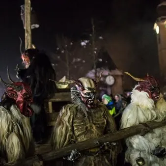

sab 5 dic
Treno storico dei Krampus 2026 - SOLD OUT
SOLD OUT Locomotiva elettrica/diesel con carrozze Centoporte degli anni '30 e bagagliaio Il treno dei Krampus conduce i passeggeri da Trieste a Tarvisio in occasione della sfilata per la tradizionale festa di San Nicolò e i Krampus rumorose e inquietanti creature la cui origine…
 Indicazioni
Indicazioni
- Costi e prenotazioni
- Costo non indicato · Prenotazione non indicata
- Programma
- Programma da verificare. Apri la fonte ufficiale per orari e possibili aggiornamenti.
- In caso di maltempo
- Nessuna indicazione specifica pubblicata.
- Note
- Acquisito automaticamente dalla fonte.
L’EVENTO
Descrizione completa
SOLD OUT
Locomotiva elettrica/diesel con carrozze Centoporte degli anni '30 e bagagliaio
Il treno dei Krampus conduce i passeggeri da Trieste a Tarvisio in occasione della sfilata per la tradizionale festa di San Nicolò e i Krampus, rumorose e inquietanti creature la cui origine si perde nella notte dei tempi e nella profondità della foresta. Un’occasione imperdibile per vivere la notte del cinque dicembre a Tarvisio. Accompagnerà il viaggio in Treno Luisa Rainer Chiap , studiosa delle tradizioni alpine e autrice del volume Krampus. Diavoli custodi , dedicato alle origini, al significato e all’evoluzione delle antiche figure mascherate dell’area alpino-danubiana.
Per informazioni sul treno storico:
TOLMEZZO INFOPOINT
Tel. +39 0433 44898
Cell. +39 335 7747958
info.tolmezzo@promoturismo.fvg.it
Per informazioni sulla località e sulla manifestazione:
Tarvisio Infopoint
Per le domande più frequenti
FAQ
Programma di Dettaglio
Il treno dei Krampus conduce i passeggeri da Trieste a Tarvisio in occasione della sfilata per la tradizionale festa di San Nicolò e i Krampus, rumorose e inquietanti creature la cui origine si perde nella notte dei tempi e nella profondità della foresta. Un’occasione imperdibile per vivere la notte del cinque dicembre a Tarvisio quando prima del tramonto San Nicolò, in abito da Vescovo, accompagnato dagli spaventosi “Krampus“, passa di casa in casa per lodare i bimbi buoni e ammonire quelli più birichini
Oltre a questo compito, San Nicolò deve placare le ire dei Krampus nei confronti degli spettatori, a volte aiutato da angeli. Paura e divertimento vanno di pari passo. Appena il sole tramonta, San Nicolò scompare dalla sfilata, lasciando incontrollati i diavoli. La tradizione vuole che l’indomani mattina, al risveglio, i bambini trovino sul davanzale di una finestra un Krampus di pane dolce, con in mano una verga più o meno lunga, a seconda del “merito”.
A bordo del Treno dei Krampus sarà presente Luisa Rainer Chiap , studiosa delle tradizioni alpine e autrice del volume Krampus. Diavoli custodi , dedicato alle origini, al significato e all’evoluzione delle antiche figure mascherate dell’area alpino-danubiana. Nel corso del viaggio accompagnerà i partecipanti in un affascinante percorso alla scoperta dei mascheramenti rituali zoomorfi e delle creature solstiziali , approfondendone le radici storiche, simboliche e antropologiche. Secondo questa interpretazione, il termine Krampus deriverebbe da kramp , “artiglio”: un simbolo che richiama la capacità di afferrare l’inafferrabile e di squarciare l’oscurità, esteriore ma soprattutto interiore, favorendo il ritorno della luce. Lontane dall’essere incarnazioni del male, queste figure rappresentano piuttosto le forze più autentiche e primordiali della Natura, custodi di un patrimonio culturale che attraversa i secoli e continua ancora oggi ad affascinare e coinvolgere intere comunità
INFORMAZIONI DI SERVIZIO AI PASSEGGERI:
Dopo il momento di accoglienza alla stazione di Boscoverde, dal punto di fermata presso la stazione ferroviaria ci saranno le navette ad attendere i passeggeri per il transfer a Tarvisio Autostazione (Via Vittorio Veneto) ; Da Tarvisio città (Autostazione) partenza per Boscoverde ore 20:00 La piazza Unità e il centro di Tarvisio sono facilmente raggiungibili attraverso un sottopassaggio situato a pochi metri di distanza dall’Autostazione. Si raccomanda di leggere attentamente le indicazioni sul punto di fermata e di prestare attenzione agli orari di ripartenza delle navette.
Orari del treno:
Andata: TRIESTE CENTRALE 11:50 MONFALCONE 12:19 GORIZIA CENTRALE 12:46 UDINE 13:38 GEMONA DEL FR. 14:11 TARVISIO BOSCOV. 15:12
Ritorno: TARVISIO BOSCOV. 21:00 GEMONA DEL FR. 21:49 UDINE 22:30 GORIZIA CENTRALE 23:04 MONFALCONE 23:29 TRIESTE CENTRALE 23:59
Tariffe:
Andata e ritorno in treno storico
Adulti 10€;
Ragazzi (dai 4 ai 12 anni non compiuti) 5€;
Bambini (dai 0 ai 4 anni non compiuti) gratis senza riservazione del posto a sedere
Biglietti in vendita attraverso tutti i canali Trenitalia: www.trenitalia.com • biglietterie e self-service di stazione • agenzie di viaggio abilitate.
ACQUISTA IL BIGLIETT O
IL PROGRAMMA
Programma e orari
Appuntamenti raccolti dalle fonti elencate. Dove manca un orario, non è ancora disponibile in questa scheda.
Programma pubblicato
- ore 20:00
INFORMAZIONI UTILI
Prima di partire
- Controllare la fonte prima di partire.
ORGANIZZAZIONE